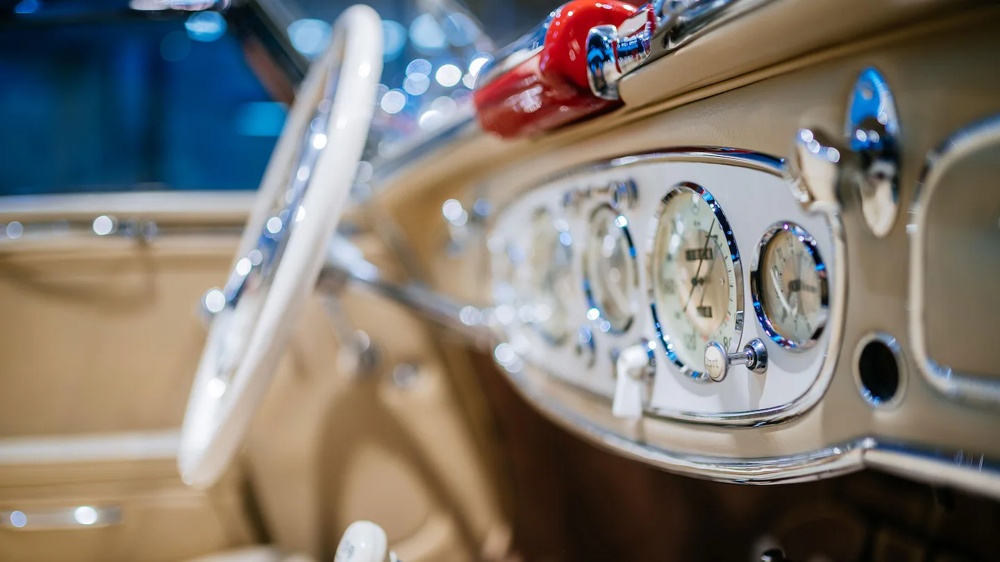

Due to the "Stuttgart Run" sporting event, the Mercedes‑Benz Museum can only be reached by car via Martin-Schrenk-Weg on Saturday, May 16, 2026 and Sunday, May 17, 2026. We ask for your understanding. Free admission to the Mercedes‑Benz Museum on International Museum Day on 17 May 2026. and the racing simulators can also be tried out at no additional cost. During VfB Stuttgart’s football home matches and other major events access to the Mercedes‑Benz Museum may be restricted. In such circumstances we recommend using the public transport.
Tuesday to Sunday 9 a.m. to 6 p.m. Closed on Monday. Box office closing time: 5 p.m. Last elevator ride: 5.20 p.m. Please note the opening hours during the public holidays. More information
Day ticket regular: 16.00 €, reduced: 8.00 € Book tickets now. More information
Mercedes‑Benz Museum Mercedesstrasse 100 70372 Stuttgart
Mercedes‑Benz Classic Contact Center Phone: +49 711-17 30 000 Email: classic@mercedes-benz.com
Discover the latest offers around the Mercedes‑Benz Museum. More information
An unrivalled journey through the history of the automobile. Mercedes‑Benz Museum with overnight stay in a hotel in Stuttgart. More information
Parking facilities are available in the museum’s car park or in the P4 multistory car park. During VfB Stuttgart’s football home matches and other major events access to the Mercedes‑Benz Museum may be restricted. In such circumstances we recommend using the S-Bahn. More information
Offers for children, daycare centers and school classes. More information
Here you will find important information for visitors with disabilities and people accompanying visitors with disabilities. More information
Here you will find answers to frequently asked questions about your visit to the Mercedes‑Benz Museum. More information
Discover the Mercedes‑Benz Museum together with our guides. More information
Explore the Mercedes‑Benz Museum on unusual paths and discover exciting exhibits: with the discovery tours you can experience the fascination of over 135 years of automotive history in 45 minutes. More information
Design your visit entirely according to your wishes. More information
Use our app as a digital companion for your museum visit. Launch Web App
You can download the information brochures in various languages here. Please note the opening hours during the public holidays 2026. German English French Italian Dutch Spanish Polish Turkish
Book your ticket online
Read more
Follow Mercedes-Benz


.webp)
.webp)
.webp)
.webp)